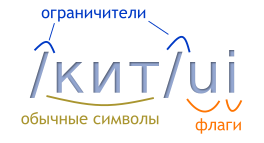
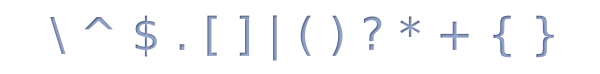
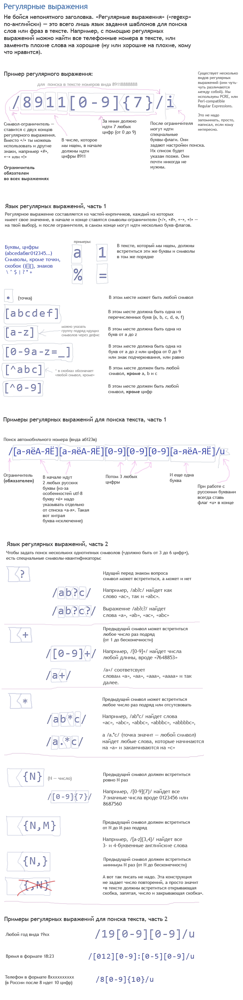
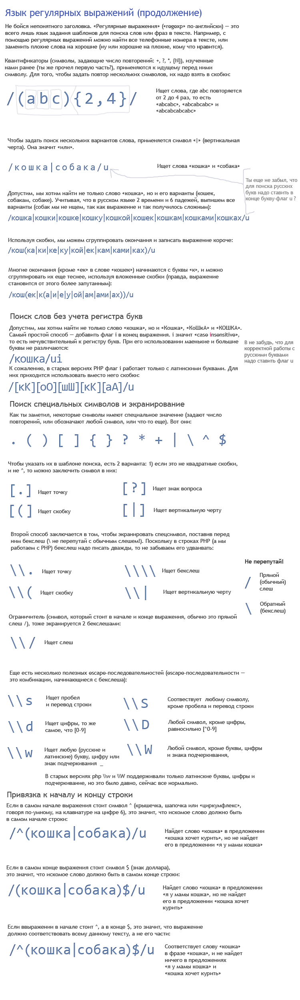
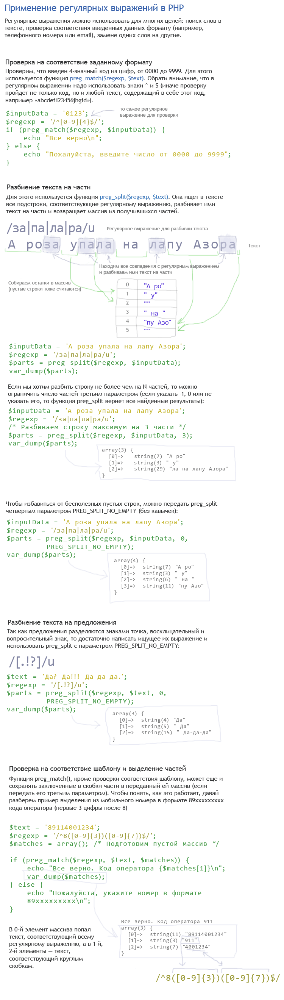
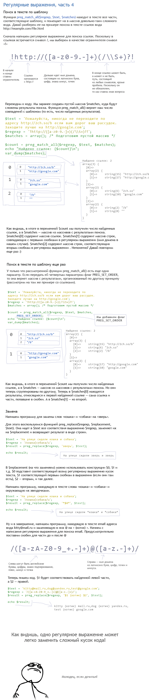
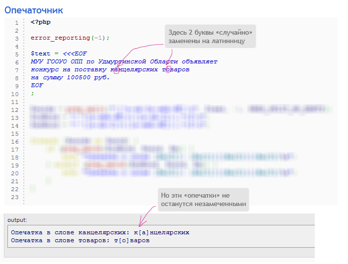

Начнем с одной народной программистской мудрости:
Некоторые люди, сталкиваясь с проблемой, думают: «Ага, я умный, я решу её с помощью регулярных выражений». Теперь у них две проблемы.
Это довольно-таки объемный и сложный урок. Но, если ты дошел до сюда, то ты способен осилить и это. Просто почти теорию, не надо учить её наизусть, а когда дойдешь до задачек, вернись и проясни непонятные моменты. Есть также документация по регулярным выражениям в PHP, ссылка: https://secure.php.net/manual/ru/pcre.pattern.php
Также, важно помнить, что есть несколько диалектов регулярных выражений. Они во многом похожи, но могут отличаться отстутвием каких-то возможностей. В PHP используется диалект PCRE и выражения, написанные на другом диалекте, могут не заработать.
Начнем с простейшего регулярного выражения:
Выражение /кит/ui ищет последовательность букв «кит» в любом регистре.
То есть оно найдет, например, подстроку «кит» в строке «Китай». Разберемся, как устроено
это выражение.
Любое выражение начинается с символа-ограничителя (delimiter по англ.). Этот символ
обозначает начало и конец шаблона, соответствие которому мы ищем в тексте. В качестве
него обычно используют символ /, но можно использовать и другие
символы, не имеющие специального назначения в регулярках, например, ~,
# или @. Альтернативные разделители используют, если в
выражении может встретиться сам символ /. Первый ограничитель
обозначает начало шаблона, второй — конец. За ним может идти одна или
несколько латинских букв-флагов. Они задают дополнительные опции при
поиске текста. Вот значение использованных флагов:
i (ignore case) - говорит, что поиск должен вестись без учета
регистра букв (по умолчанию регистр учитывается)u (unicode) - говорит, что выражение и текст, по которому идет поиск,
используют кодировку utf-8, а не только латинские буквы. Без него поиск
кириллицы (и любых других нелатинских символов) может работать некорректно,
потому лучше ставить его всегда.Шаблон составляется из обычных символов и символов, имеющих специальное значение (их называют спецсимволы или метасимволы). Вот полный список таких символов. Ниже мы разберем, что значит каждый из них:
Например, символ «точка» . обозначает «один любой символ, кроме
символа перевода строки» (то есть \n). Вот пример выражения,
использующего этот спецсимвол:
Это выражение ищет в тексте подстроку из 3 символов, где первый символ - это буква
«к», второй символ - любой символ, кроме \n, и третий - это буква «т». Под
этот шаблон подходит, например, слово «кот» и начало слова «каток». Точка соответствует
ровно одному символу и, если бы мы написали выражение /к...т/ui, то оно бы
обозначало, что между буквами «к» и «т» должно быть 3 любых символа.
Перед тем, как изучить значение остальных символов, рассмотрим пример программы на PHP, использующей регулярные выражения.
Для проверки, соответствует ли текст или его часть шаблону, в PHP
есть функция
preg_match($regexp, $text, $match).
Она принимает на вход регулярку, текст и пустой массив. Она проверяет,
есть ли в тексте подстрока, соответствующая данному шаблону и возвращает
0, если нет,
или 1, если она есть. А в переданный массив $match в
элемент с индексом 0 кладется первая найденная подстрока, совпавшая с регуляркой
(это немного необычный способ вернуть результат, но так уж тут сделано).
Напишем простую программу, применяющую регулярное выражение к разным строкам:
| Код | Результат |
|---|---|
|
Строка: рыжий кот + Найдено слово 'кот' Строка: рыжий крот - Ничего не найдено Строка: скиталец + Найдено слово 'кит' |
Протестировать выражение можно так же на сайте https://regex101.com/, но он на английском языке.
Познакомившись с примером, изучим регулярные выражения более подробно.
Регулярное выражение состоит из обычных символов (обозначающих самих себя) и специальных конструкций. Комбинируя эти конструкции, можно строить произвольно сложные выражения.
Точка в регулярке обозначает один любой символ, кроме перевода строки
\n. Если добавить в конец выражения флаг s,
то точка будет соответствовать одному любому символу, включая перевод строки.
Символьный класс - это конструкция вроде [123], заключенная
в квадратные скобки, которая значит «один любой из указанных символов» или
«любой символ, кроме указанных».
Если мы хотим указать, что в этом месте строки должна быть любая цифра
от 0 до 5, то вместо перечисления всех цифр [012345] мы
можем просто указать диапазон [0-5]. Аналогично можно
поступить для диапазона букв. При этом в скобках можно указать несколько
диапазонов и отдельных символов, например [0-3а-гжз] обозначает
«один любой символ из набора 0, 1, 2, 3, а, б, в, г, ж, з».
Для кириллицы, к сожалению, буква «ё» не входит в
диапазон [а-я] и, чтобы написать «любая русская буква», нужно
писать [а-яё]. Не входят в диапазон [а-я] и
другие символы расширенной кириллицы вроде Қ, Ї или ў. Их придется
тоже указывать отдельно.
С латиницей таких проблем нет, и выражение [a-z]
соответствует любому одному символу латинского алфавита.
[^0-9@] обозначает «любой
символ, кроме цифры или символа @».
В квадратных скобках многие спецсимволы теряют свое специальное значение.
Например, точка в квадратных скобках обозначает просто символ точки, а не
любой символ. Специальное значение имеют только символы
[, ], \, ^ и -.
Чтобы указать их, перед ними нужно поставить бекслеш \. Например,
если мы хотим написать «квадратная скобка или минус», то нам надо составить
сложное выражение [\]\[\-]. Такое выражение, конечно, с первого раза
прочесть трудно.


Давай повторим, что обозначают разные виды скобок:
a{1,5} задают число повторений предыдущего
символа - в этом примере выражение ищет от 1 до 5 идущих подряд
букв «a»[a-c0-5xyz] означают «один любой из
этих символов», в данном случае - буквы a, b, c, x, y, z или
цифра от 0 до 5. Внутри квадратных скобок не работают другие спецсимволы
вроде | или * - они обозначают обычный символ. Если
в квадратных скобках в начале стоит символ ^ то смысл меняется
на противоположный: «любой один символ, кроме указанных» -
например [^a-c] значит «один любой символ,
кроме a, b или c».abc+ знак «плюс» относится только
к букве c и это выражение ищет слова вроде abc, abcc, abccc. А если
поставить скобки a(bc)+ то квантифиактор плюс относится
уже к последовательности bc и выражение ищет слова
abc, abcbc, abcbcbcПримечание: в квадратных скобках можно указывать диапазоны
символов, но помни, что русская буква ё идет отдельно от
алфавита и чтобы написать «любая буква русского алфавита»,
надо писать [а-яё].
Если ты смотрел другие учебники по регулярным выражениям, то наверно заметил,
что бекслеш везде пишут по-разному. Где-то пишут один бекслеш:
\d, а здесь в примерах он повторен 2 раза: \\d.
Почему?
Язык регулярных выражений требует писать бекслеш один раз. Однако в
строках в одиночных и двойных кавычках в PHP бекслеш тоже имеет особое
значение: мануал про строки.
Ну например, если написать $x = "\$"; то PHP воспримет это как
специальную комбинацию и вставит в строку только символ $
(и движок регулярных выражений не узнает о бекслеше перед ним). Чтобы
вставить в строку последовательность \$, мы должны удвоить бекслеш
и записать код в виде $x = "\\$";.
По этой причине в некоторых случаях (там, где последовательность символов имеет специальный смысл в PHP) мы обязаны удваивать бекслеш:
\$, мы пишем в коде "\\$"\\, мы удваиваем каждый
бекслеш и пишем "\\\\"\1),
бекслеш надо удвоить: "\\1"В остальных случаях один или два бекслеша дадут один и тот же
результат: "\\d" и "\d" вставят в строку пару
символов \d - в первом случае 2 бекслеша это последовательность
для вставки бекслеша, во втором случае специальной последовательности
нет и символы вставятся как есть. Проверить, какие символы вставятся в строку,
и что увидит движок регулярных выражений, можно с помощью
echo: echo "\$";. Да, сложно, а что поделать?
\d ищет одну любую цифру, \D - один
любой символ, кроме цифры\w соответствует одной любой букве (любого алфавита), цифре
или знаку подчеркивания _. \W соответствует
любому символу, кроме буквы, цифры, знака подчеркивания.Также, есть удобное условие для указания на границу слова: \b.
Эта конструкция обозначает, что с одной стороны от нее должен стоять символ,
являющийся буквой/цифрой/знаком подчеркивания (\w), а с
другой стороны - не являющийся. Ну, например, мы хотим найти в тексте слово
«кот». Если мы напишем регулярку /кот/ui, то она
найдет последовательность этих букв в любом месте - например, внутри слова
«скотина». Это явно не то, что мы хотели. Если же мы добавим
условие границы слова в регулярку: /\bкот\b/ui, то теперь
искаться будет только отдельно стоящее слово «кот».
Также, есть полезный сайт Regex101, где можно протестировать свою регулярку и проверить, что она найдет в тексте. Помни, что на том сайте бекслеши надо писать ровно один раз, и ставить флаг u не требуется.

Напиши программу, получающую на вход автомобильный номер, и проверяющую, правильно ли он введен. Автомобильный номер имеет вид «а123вг», то есть начинается с буквы, за которой идет 3 цифры, и еще 2 буквы. Никаких посторонних символов быть в нем не должно.
Эту программу надо решить с помощью preg_match() и регулярного
выражения. Протестировать его ты можешь например на сайте Regex101.
Дан текст, который по идее должен быть номером телефона в виде 8-(911)-506 56 56 (т.е. человек может ввести не только цифры, но и скобки, минусы, может что-то еще). Но в реальности, пользователь может вместо номера написать что угодно. Напиши скрипт для проверки правильности введенного номера («8(911)-506 56 56» — правильный номер, «8-911-50-656-56» — правильный, «89115065656» — правильный, «02» — неправильный, «89115065656 позвать Люду» — неправильный).
Задачу надо проверить на большом числе телефонов, чтобы убедиться что твой код правильный. Для этого давай добавим в программу тесты, чтобы сразу было видно, верно все работает или нет. Сделай 2 списка номеров (правильные и нет), добавь их в программу и напиши цикл, который их по очереди прогоняет через регулярку и проверяет, что они определяются как надо (если нет — надо вывести, какой именно номер не распознается правильно).
Вот список номеров:
// Правильные: $correctNumbers = [ '84951234567', '+74951234567', '8-495-1-234-567', ' 8 (8122) 56-56-56', '8-911-1234567', '8 (911) 12 345 67', '8-911 12 345 67', '8 (911) - 123 - 45 - 67', '+ 7 999 123 4567', '8 ( 999 ) 1234567', '8 999 123 4567' ]; // Неправильные: $incorrectNumbers = [ '02', '84951234567 позвать люсю', '849512345', '849512345678', '8 (409) 123-123-123', '7900123467', '5005005001', '8888-8888-88', '84951a234567', '8495123456a', '+1 234 5678901', /* неверный код страны */ '+8 234 5678901', /* либо 8 либо +7 */ '7 234 5678901' /* нет + */ ];
Также, на regex101
https://regex101.com/r/qF7vT8/3 уже введены номера и можно простестировать
свою регулярку. Помни что на этом сайте надо писать бекслеш один раз,
например \s, а не \\s. Флаг m там стоит чтобы
^ и $ в регулярке обозначали «начало и конец
любой строки», а не «начало и конец всего текста». Флаг g (его нет в PHP,
он только на этом сайте) значит что надо искать все совпадения с
регуляркой, а не только первое.
Подсказка: не надо строить сложных выражений и предусматривать все возможные комбинации символов. Достаточно написать: сначала идет +7 или 8, за ними ровно 10 цифр, между которыми может быть любое число скобок, минусов, пробелов

В случае обнаружения ошибки скрипт должен писать сообщение об этом и выводить кусок текста с ошибкой (чтобы было понятно, что не так).
Как тебе наверно известно, многие люди, занимающие государственные посты, тратят свои силы отнюдь не на улучшение ситуации в своем городе или регионе, а на придумывание разнообразных схем по перемещению вверенных им бюджетных средств в свои карманы.
Например, государственные органы, которые хотят провести закупки, обязаны организовать публичные торги и разместить объявление о них на сайте госзакупок. Чтобы помешать всем желающим участвовать в тендере (и чтобы отдать заказ «своим людям» и получить потом от них в свой карман часть денег), они заменяют в описании заказа некоторые буквы кирилицы на похожие на них латинские. Таким образом, не предупрежденные заранее организации не смогут найти объявление через поиск и принять участие в конкурсе.
Давай попробуем применить наши знания языка PHP для того, чтобы вывести жуликов на чистую воду.
Задача: дан текст, содержащий слова на русском и английском языках. В некоторых словах часть букв кирилицы заменена на похожие на них латинские, и наоборот. Напиши программу, которая находит все такие слова, выводит их и выделяет квадратными скобками первую замененную букву.
Для проверки работоспособности, попробуй применить программу к тексту из поля «Наименование заказа» на странице (осторожно, спойлер!) http://zakupki.gov.ru/pgz/public/action/orders/info/common_info/show?notificationId=5193640 или http://zakupki.gov.ru/pgz/public/action/orders/info/common_info/show?notificationId=5138013 ололо кто бы поверил!
Дополнительная задача: добавь в программу автоматическое исправление найденных «опечаток».
Подсказки для глупеньких: слова с опечатками найти легко: это слово, которое начинается с одной или нескольких русских букв, за которыми идет латинская. Ну или начинается с латинской, за которой идет русская. Достаточно минимальных знаний регулярных выражений, чтобы написать решение.
P.S. На сайте программистских комиксов xkcd есть комикс про регулярные выражения: перевод, оригинал (англ.).
-----
Куда вводить код? Что надо скачать? Читай первый урок.
Есть вопросы? Задай гуглу или автору.
Нравится урок? Лайкай, репости, приглашай друзей, пости котов и Канако, шли добра, решай задачи, помогай новичкам! Кнопок для лайка нет, кто хочет зарепостить, всегда может сделать это ручками.
Как связаться с автором? Я хочу переодеть его в платье школьницы и жениться на нем. Ящик codedokode (кот) gmail.com ждет ваших писем. А вконтактик и фейсбучек ждут ваших лайков. Но ответ на банальные вопросы лучше искать в Гугле или на stackoverflow.
Я решил задачку!!! Молодец, делай следующий урок
Ideone не работает!11 Ну так открой Гугл и найди сайты вроде https://repl.it/languages/php , http://phptester.net/ , http://sandbox.onlinephpfunctions.com/ , http://codepad.org/ или http://www.runphponline.com/ . Не ленись.
Почему так много рекламы? Всю рекламу на сайте ставит юкоз (бесплатный хостинг же), а не я.
На сайте установлена система Google Analytics (и еще несколько аналогичных систем от юкоза). Данные о твоем IP-адресе, посещаемых страницах, времени посещения отправляются в Google Corporation, США. Хочу знать, кто и зачем сюда заходит. Поверь, другие сайты делают точно так же. Все сайты пишут логи.